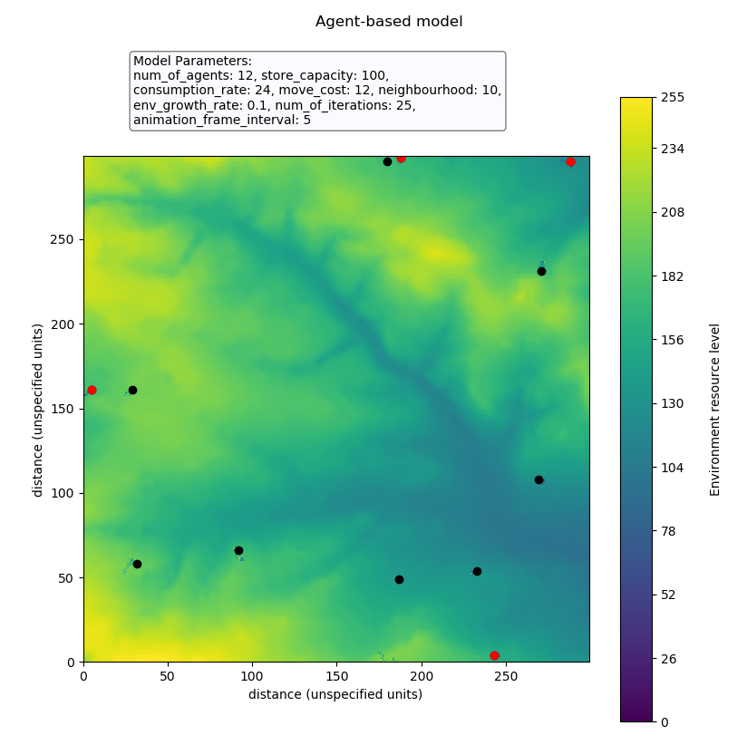

This model describes the interaction of a number of generated agents with each other and the environment. Agents are able to move about the environment, eat from the environment store at their position, be sick and deposit most of their store at their current position if they have consumed too much and share their resources equally with other agents within a specified radius of themselves.
The user is able to choose a number the input parameters:
The model is set to run until the specified number of iterations has been completed or until one of the agents stores has fallen below zero after the eating, moving, sharing with neighbours actions have been resolved for that iteration. This simulates that one of the agents has been unable to sustain themselves and has effectively died. The user will know if this has happened because the message 'Stopping condition implemented after [number of completed iterations] iterations because at least one agent store fell below zero' will be printed to the screen.
It is possible to set a number of different runs at once, each with a different combination of specified input parameters if the user is interested in analysing the difference in model outcomes as a result of varying inputs. To do this the model must be run from the model_runner.py file rather than the model.py file.
There is a simple command line user interface that the user can interact with to specify the parameters they wish to enter into the model. The user simply needs to follow the instructions when the file is run. Alternatively, instruction can be found in the readme.txt file with the download files.
Please follow the link below to download the model from my GitHub page:
Download Agent Based ModelPlease note: This model has been scripted using Python version 3.6.5. Issues may be encountered if you have installed and are trying to run the model using a different version of Python.